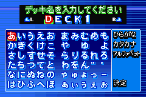

Field of Nine - Digital Edition 2001 (Japan)
SRAM 256K Save Format Spec gbakit Built-In
Cartridge Identity
- Game Code
AF9J(FamilyAF9)- Header Title
FO9DG01A- Maker / Revision
A4/ rev0- ROM Size
- 8.0 MiB (8,388,608 B)
- Save Media
SRAM 256K- SHA-256
e1173825f63ace56ae4de85c0190ce6602e61c3204c551bc625d2c13e4d03118
Screenshots

Battery Save Format Specification
Open Full Save Format SpecDownload Sample .sav (32,768 B)Download save-format.json
- Specification Coverage
- 29 mapped fields · 1 verified checksum(s) · Confidence: HIGH
- gbakit Built-In Support
- Built-in (AF9J)
- Emulator Verification
- Checksum enforced: No · Repaired save accepted: Yes
gbakit save verify AF9J save.sav
gbakit save decode AF9J save.sav
gbakit save fix AF9J damaged.sav -o repaired.savObserved Battery Save Layout
- Fill Byte & Active Size
0xFFfill · 3,552–5,716 / 32,768 B active (entropy 1.34 bits/B)- Active Offset Ranges
0x0–0x1653(1 total)- ASCII Magic / Headers
- None detected
- Observed Variable Regions
- 2,164 bytes across 1 spans:
0xD98–0x160B - Candidate Checksum/Counter Spans
- None
Hardware MMIO Subsystems
ppu_display0x80004e4,0x8000574,0x8001b70,0x800290c,0x80030d0,0x800604c,0x80065c8save_bus_sram_flash0x80024c8,0x8002610